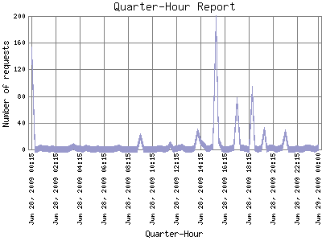

Analog 5.32
Analog 5.32 Report Magic 2.21
Report Magic 2.21The Quarter-Hour Report identifies the level of activity for each 15-minute interval within the report timeframe. Remember that one page hit can result in several server requests as the images for each page are loaded.

| Quarter-Hour | Number of requests | Percentage of the requests | |
|---|---|---|---|
| 1. | Jun 29, 2009 00:00 | 2 | 0.00% |
| 2. | Jun 28, 2009 23:45 | 0 | 0.00% |
| 3. | Jun 28, 2009 23:30 | 1 | 0.00% |
| 4. | Jun 28, 2009 23:15 | 2 | 0.00% |
| 5. | Jun 28, 2009 23:00 | 2 | 0.00% |
| 6. | Jun 28, 2009 22:45 | 0 | 0.00% |
| 7. | Jun 28, 2009 22:30 | 0 | 0.00% |
| 8. | Jun 28, 2009 22:15 | 1 | 0.00% |
| 9. | Jun 28, 2009 22:00 | 0 | 0.00% |
| 10. | Jun 28, 2009 21:45 | 0 | 0.00% |
| 11. | Jun 28, 2009 21:30 | 0 | 0.00% |
| 12. | Jun 28, 2009 21:15 | 25 | 0.01% |
| 13. | Jun 28, 2009 21:00 | 3 | 0.00% |
| 14. | Jun 28, 2009 20:45 | 1 | 0.00% |
| 15. | Jun 28, 2009 20:30 | 0 | 0.00% |
| 16. | Jun 28, 2009 20:15 | 3 | 0.00% |
| 17. | Jun 28, 2009 20:00 | 2 | 0.00% |
| 18. | Jun 28, 2009 19:45 | 0 | 0.00% |
| 19. | Jun 28, 2009 19:30 | 29 | 0.01% |
| 20. | Jun 28, 2009 19:15 | 1 | 0.00% |
| 21. | Jun 28, 2009 19:00 | 0 | 0.00% |
| 22. | Jun 28, 2009 18:45 | 2 | 0.00% |
| 23. | Jun 28, 2009 18:30 | 90 | 0.02% |
| 24. | Jun 28, 2009 18:15 | 0 | 0.00% |
| 25. | Jun 28, 2009 18:00 | 1 | 0.00% |
| 26. | Jun 28, 2009 17:45 | 2 | 0.00% |
| 27. | Jun 28, 2009 17:30 | 2 | 0.00% |
| 28. | Jun 28, 2009 17:15 | 74 | 0.02% |
| 29. | Jun 28, 2009 17:00 | 3 | 0.00% |
| 30. | Jun 28, 2009 16:45 | 1 | 0.00% |
| 31. | Jun 28, 2009 16:30 | 0 | 0.00% |
| 32. | Jun 28, 2009 16:15 | 0 | 0.00% |
| 33. | Jun 28, 2009 16:00 | 1 | 0.00% |
| 34. | Jun 28, 2009 15:45 | 14 | 0.00% |
| 35. | Jun 28, 2009 15:30 | 196 | 0.04% |
| 36. | Jun 28, 2009 15:15 | 5 | 0.00% |
| 37. | Jun 28, 2009 15:00 | 1 | 0.00% |
| 38. | Jun 28, 2009 14:45 | 1 | 0.00% |
| 39. | Jun 28, 2009 14:30 | 6 | 0.00% |
| 40. | Jun 28, 2009 14:15 | 11 | 0.00% |
| 41. | Jun 28, 2009 14:00 | 26 | 0.01% |
| 42. | Jun 28, 2009 13:45 | 2 | 0.00% |
| 43. | Jun 28, 2009 13:30 | 0 | 0.00% |
| 44. | Jun 28, 2009 13:15 | 0 | 0.00% |
| 45. | Jun 28, 2009 13:00 | 0 | 0.00% |
| 46. | Jun 28, 2009 12:45 | 4 | 0.00% |
| 47. | Jun 28, 2009 12:30 | 2 | 0.00% |
| 48. | Jun 28, 2009 12:15 | 1 | 0.00% |
| 49. | Jun 28, 2009 12:00 | 0 | 0.00% |
| 50. | Jun 28, 2009 11:45 | 7 | 0.00% |
| 51. | Jun 28, 2009 11:30 | 1 | 0.00% |
| 52. | Jun 28, 2009 11:15 | 0 | 0.00% |
| 53. | Jun 28, 2009 11:00 | 1 | 0.00% |
| 54. | Jun 28, 2009 10:45 | 1 | 0.00% |
| 55. | Jun 28, 2009 10:30 | 0 | 0.00% |
| 56. | Jun 28, 2009 10:15 | 0 | 0.00% |
| 57. | Jun 28, 2009 10:00 | 0 | 0.00% |
| 58. | Jun 28, 2009 09:45 | 0 | 0.00% |
| 59. | Jun 28, 2009 09:30 | 0 | 0.00% |
| 60. | Jun 28, 2009 09:15 | 19 | 0.00% |
| 61. | Jun 28, 2009 09:00 | 0 | 0.00% |
| 62. | Jun 28, 2009 08:45 | 0 | 0.00% |
| 63. | Jun 28, 2009 08:30 | 0 | 0.00% |
| 64. | Jun 28, 2009 08:15 | 0 | 0.00% |
| 65. | Jun 28, 2009 08:00 | 0 | 0.00% |
| 66. | Jun 28, 2009 07:45 | 0 | 0.00% |
| 67. | Jun 28, 2009 07:30 | 2 | 0.00% |
| 68. | Jun 28, 2009 07:15 | 1 | 0.00% |
| 69. | Jun 28, 2009 07:00 | 0 | 0.00% |
| 70. | Jun 28, 2009 06:45 | 0 | 0.00% |
| 71. | Jun 28, 2009 06:30 | 0 | 0.00% |
| 72. | Jun 28, 2009 06:15 | 0 | 0.00% |
| 73. | Jun 28, 2009 06:00 | 0 | 0.00% |
| 74. | Jun 28, 2009 05:45 | 1 | 0.00% |
| 75. | Jun 28, 2009 05:30 | 0 | 0.00% |
| 76. | Jun 28, 2009 05:15 | 0 | 0.00% |
| 77. | Jun 28, 2009 05:00 | 1 | 0.00% |
| 78. | Jun 28, 2009 04:45 | 2 | 0.00% |
| 79. | Jun 28, 2009 04:30 | 0 | 0.00% |
| 80. | Jun 28, 2009 04:15 | 1 | 0.00% |
| 81. | Jun 28, 2009 04:00 | 1 | 0.00% |
| 82. | Jun 28, 2009 03:45 | 5 | 0.00% |
| 83. | Jun 28, 2009 03:30 | 2 | 0.00% |
| 84. | Jun 28, 2009 03:15 | 0 | 0.00% |
| 85. | Jun 28, 2009 03:00 | 0 | 0.00% |
| 86. | Jun 28, 2009 02:45 | 0 | 0.00% |
| 87. | Jun 28, 2009 02:30 | 0 | 0.00% |
| 88. | Jun 28, 2009 02:15 | 0 | 0.00% |
| 89. | Jun 28, 2009 02:00 | 1 | 0.00% |
| 90. | Jun 28, 2009 01:45 | 0 | 0.00% |
| 91. | Jun 28, 2009 01:30 | 1 | 0.00% |
| 92. | Jun 28, 2009 01:15 | 1 | 0.00% |
| 93. | Jun 28, 2009 01:00 | 2 | 0.00% |
| 94. | Jun 28, 2009 00:45 | 0 | 0.00% |
| 95. | Jun 28, 2009 00:30 | 0 | 0.00% |
| 96. | Jun 28, 2009 00:15 | 149 | 0.03% |
Most active quarter-hour Jan 23, 2009 08:00 : 22,310 requests handled.
Average quarter-hour: 13 requests handled.
This report was generated on June 29, 2009 05:50.
Report time frame August 13, 2008 23:20 to June 29, 2009 00:00.
| Web statistics report produced by: | |
| Analog 5.32 | Report Magic 2.21 |